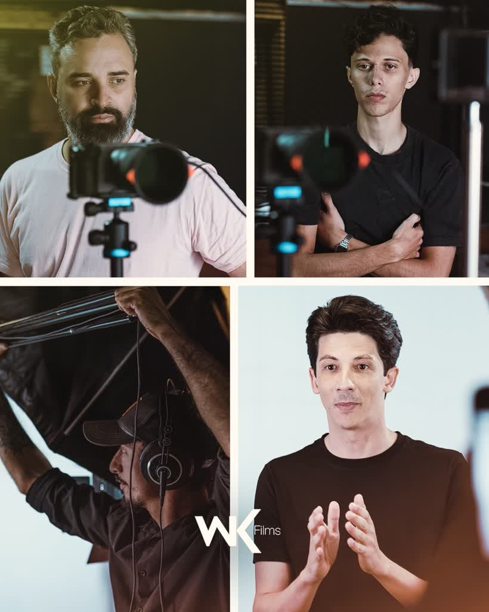

Seu conteúdo não parece do tamanho da sua empresa
Vídeo tremido, áudio ruim e foto de celular passam a mensagem errada: a de que você é pequeno — mesmo faturando alto.
Produtora + Agência de Marketing · Vilhena–RO
A WK une produção audiovisual de cinema, tráfego pago e assessoria estratégica para transformar atenção em faturamento. Do agro ao político, do comércio ao consultório — com equipe, estúdio e equipamento próprios aqui em Vilhena.
Diagnóstico sem compromisso · resposta no mesmo dia útil · seg a sex, 08h–18h
O problema real
A maioria das empresas da região já posta, já impulsiona, já tentou. E mesmo assim continua parecendo igual ao concorrente. Veja se algum destes pontos é o seu:
Vídeo tremido, áudio ruim e foto de celular passam a mensagem errada: a de que você é pequeno — mesmo faturando alto.
Botão “turbinar” gasta dinheiro e entrega curtida. Sem estrutura de campanha, público e criativo, não existe venda rastreável.
Quando o mês fica fraco, não há nenhuma alavanca para puxar. Marketing vira despesa emergencial em vez de sistema.
Prometeram o mundo, sumiram no meio do contrato e devolveram uma planilha que ninguém entende. Confiança quebrada custa caro.
Não porque é melhor — porque é mais visto. Autoridade é construída com constância e produção que sustenta o preço.
Você é dono, vendedor, comprador e RH. Marketing sobra para o fim do dia — e por isso nunca sai do lugar.
Se você marcou dois ou mais, o problema tem solução — e começa com uma conversa de 15 minutos.
Falar com um especialista agoraO que fazemos
Roteiro, captação, edição, mídia e estratégia dentro da mesma casa. Você fala com um time só, e a mensagem chega inteira do começo ao fim.
Filmes que vendem, não vídeos que só enfeitam. Direção, roteiro, captação em 4K, drone, som direto, cor e finalização.
Meta Ads e Google Ads estruturados para gerar conversa no WhatsApp, visita na loja e pedido fechado — com número, não com achismo.
Planejamento mensal, produção recorrente e presença constante. Sua marca deixa de aparecer “quando dá” e passa a ocupar espaço todo dia.
Marketing feito por quem entende de porteira para dentro. Linguagem, calendário e prova social do agro — safra, feira, leilão e pós-venda.
Construção de imagem pública com responsabilidade: pesquisa, posicionamento, narrativa e produção de conteúdo para pré-campanha e mandato.
Antes de anunciar, é preciso saber quem você é. Posicionamento, identidade e discurso alinhados para justificar o seu preço.
Método WK
Nada aqui é aleatório. Todo cliente entra pelo mesmo processo — o que muda é o tamanho da operação.
Reunião de 30 a 45 minutos para entender produto, margem, ticket, concorrência e o que já foi tentado. Sem enrolação e sem custo.
Definimos posicionamento, público, oferta, canais e metas. Você aprova o plano antes de qualquer câmera ser ligada.
Roteiro, storyboard, cronograma, locação, elenco e direção de arte. É aqui que o vídeo é ganho — antes de gravar.
Captação com equipe completa, edição, finalização e subida das campanhas. Conteúdo no ar com público e verba definidos.
Acompanhamento contínuo dos números, ajuste de criativo e verba, e reunião de resultado. O que funciona, escala; o que não funciona, sai.
Portfólio
Filmes, bastidores e campanhas produzidos pela nossa equipe. Toque no play para assistir.
Direção, roteiro e captação em estúdio: o filme que apresenta nosso jeito de trabalhar.
Luz, fundo, câmera e direção de apresentador — do vertical ao externo.
Filme de campo para o agronegócio: colheita, processo e a história de quem produz.
Som ligado. Os vídeos só começam a carregar quando você toca no play, para o site abrir rápido no 4G.
Filme de 60s + cortes verticais + campanha de captação de leads.
História da empresa, processo produtivo e time em um filme de 3 minutos.
Roteiro publicitário, direção de arte e veiculação em Meta Ads.
Série de vídeos curtos com linguagem direta e prova de entrega.
Aftermovie, entrevistas e conteúdo diário publicado durante o evento.
Prova social em vídeo para encurtar o ciclo de venda de alto ticket.

Quem está por trás
A WK nasceu da produção audiovisual e cresceu para o marketing completo porque descobrimos uma coisa: vídeo bonito sem estratégia não paga a conta do cliente — e estratégia sem imagem forte não convence ninguém. Hoje entregamos as duas pontas com um time que mora aqui, conhece o mercado daqui e atende de perto.
Somos os mesmos profissionais na reunião e no set. Você não é passado para um estagiário depois de assinar o contrato.
Prova social
Resultados e relatos de quem confiou a imagem da empresa ao nosso time.
“A diferença apareceu no primeiro mês: o cliente chegava na loja já sabendo o que queria, porque tinha visto o vídeo. Parou de ser explicação e virou fechamento.”
“Já tinha trabalhado com outras agências e sempre travava na produção. Com a WK gravamos o mês inteiro em um dia e ficou tudo pronto, com data para publicar.”
“O que mais pesou foi a seriedade. Combinaram prazo, cumpriram, e ainda explicaram os números de um jeito que eu, que não sou da área, entendi.”
Como trabalhar com a gente
Três formatos de parceria mensal. Projetos avulsos (um filme, uma campanha, um evento) também são bem-vindos — é só pedir o orçamento.
Para quem precisa existir bem nas redes com constância.
a partir desob consulta
Para quem quer ser a referência do segmento na região.
a partir desob consulta
Para empresas com meta agressiva, múltiplas unidades ou campanha eleitoral.
a partir desob consulta
Todo plano começa pelo diagnóstico gratuito. O valor final depende do volume de produção, do deslocamento e da verba de mídia — e é apresentado por escrito, sem taxa escondida.
Perguntas frequentes
Depende do que a sua empresa precisa. Um filme institucional avulso, um plano mensal de conteúdo e uma campanha eleitoral têm estruturas muito diferentes. Por isso começamos sempre pelo diagnóstico gratuito: entendemos o cenário e devolvemos uma proposta por escrito, com escopo, prazo e valor fechados. Sem surpresa no meio do caminho.
Sim. Atendemos todo o Cone Sul de Rondônia (Vilhena, Colorado do Oeste, Cerejeiras, Chupinguaia, Pimenta Bueno, Cabixi, Corumbiara) e cidades do norte do Mato Grosso. Para projetos fora da cidade, incluímos deslocamento e diária de equipe no orçamento, tudo transparente.
Conteúdo de redes normalmente entra no ar em poucos dias após a gravação. Filmes institucionais e comerciais seguem um cronograma de pré-produção, gravação e finalização acordado no início do projeto — com datas de aprovação definidas para não travar a entrega. Você recebe o cronograma por escrito antes de começarmos.
Não necessariamente. Existem formatos que funcionam muito bem sem o dono na frente da câmera: bastidores, produto, processo, depoimento de cliente, colaboradores, narração e motion. Dito isso, quando o dono aparece a conexão costuma ser maior — e a gente prepara você para isso, com roteiro e direção no set. Ninguém é jogado na frente da câmera sem apoio.
Trabalhamos com contrato para proteger os dois lados — prazos, escopo e direitos de uso ficam claros. Planos mensais costumam ter um período mínimo para que a estratégia tenha tempo de mostrar resultado, já que marketing feito por 30 dias não prova nada. Os termos são discutidos e ajustados antes da assinatura.
Basicamente: clareza do que você vende e disponibilidade para a reunião de diagnóstico e para o dia de gravação. Logo, materiais antigos, fotos e acessos às redes ajudam, mas se não existirem, a gente monta do zero. Também organizamos o acesso ao Gerenciador de Negócios e ao Google para que as contas de anúncio fiquem no seu nome — e não no nosso.
Sim, com consultoria estratégica, produção de conteúdo e comunicação de mandato e pré-campanha, sempre dentro das regras da legislação eleitoral vigente e em alinhamento com a assessoria jurídica do candidato ou partido. Também atendemos gestões públicas e mandatos fora do período eleitoral.
Nosso próprio time. Direção, captação, edição, design e gestão de mídia acontecem dentro da WK. Isso encurta o prazo, mantém o padrão e evita o telefone sem fio de quem terceiriza tudo.
Você chama no WhatsApp ou preenche o formulário aqui do site. Marcamos uma conversa de 30 a 45 minutos (presencial em Vilhena ou por chamada), entendemos seu momento e apontamos o que faríamos primeiro. Se fizer sentido para os dois lados, enviamos a proposta. Se não fizer, você sai com um diagnóstico honesto na mão de graça.
Último passo
Preencha os campos ao lado e a conversa já começa organizada: recebemos seu contexto e respondemos com o próximo passo. Leva menos de um minuto.
R. São Luiz, 350 — Quinto BEC (5º BEC), Vilhena–RO, 76988-070.
| Domingo | Fechado |
|---|---|
| Segunda-feira | 08:00 às 18:00 |
| Terça-feira | 08:00 às 18:00 |
| Quarta-feira | 08:00 às 18:00 |
| Quinta-feira | 08:00 às 18:00 |
| Sexta-feira | 08:00 às 18:00 |
| Sábado | 08:00 às 11:30 |